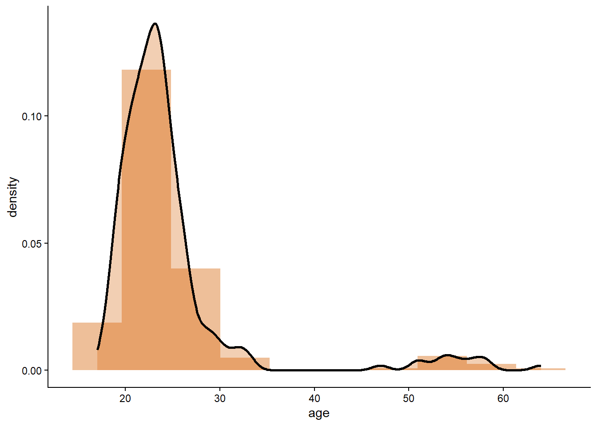
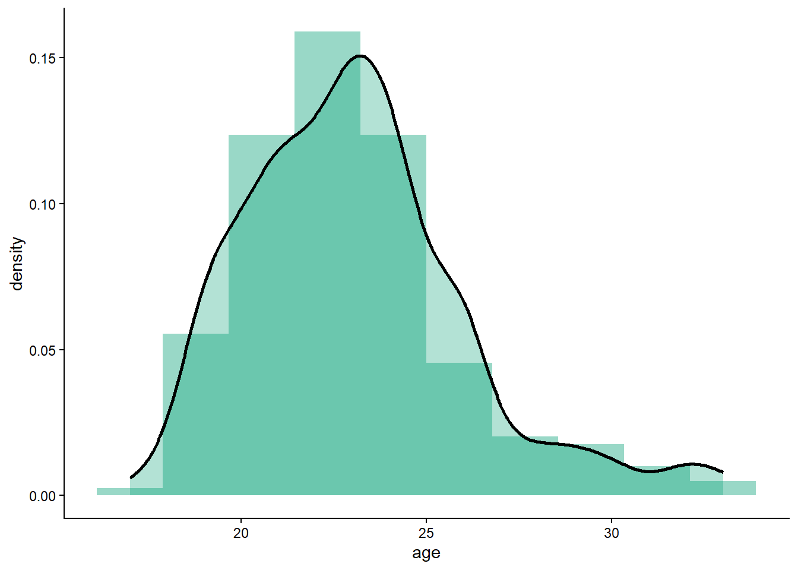
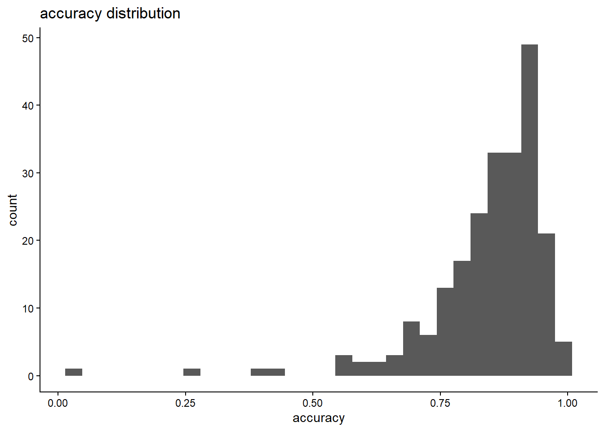
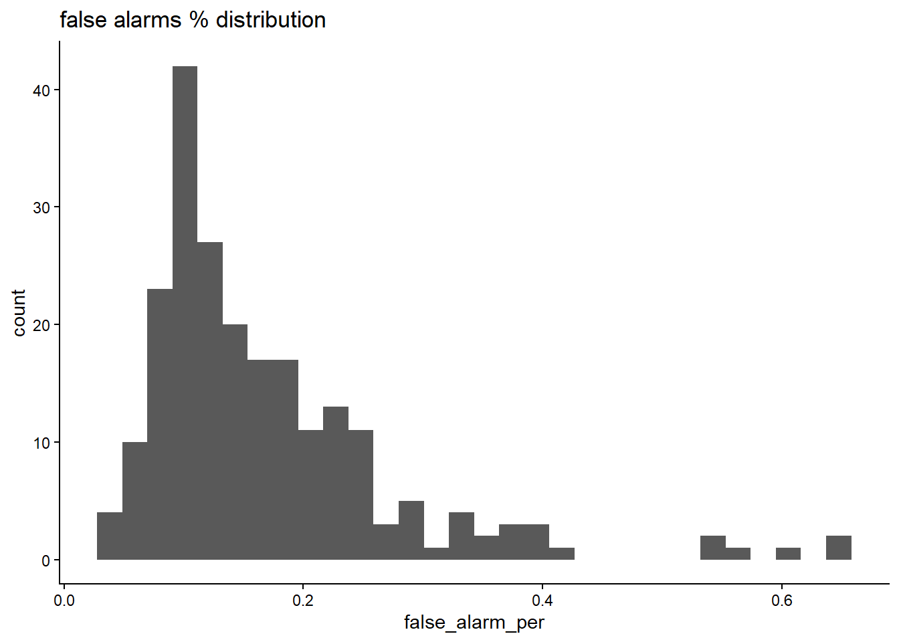
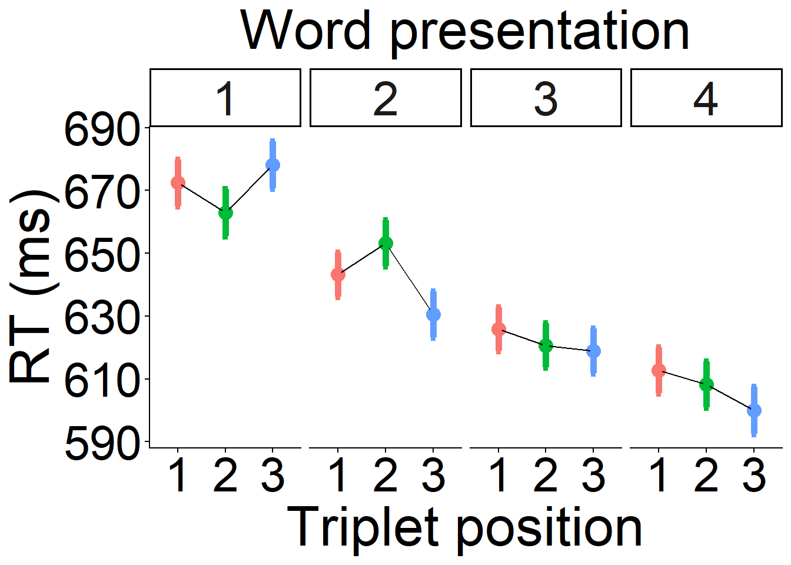
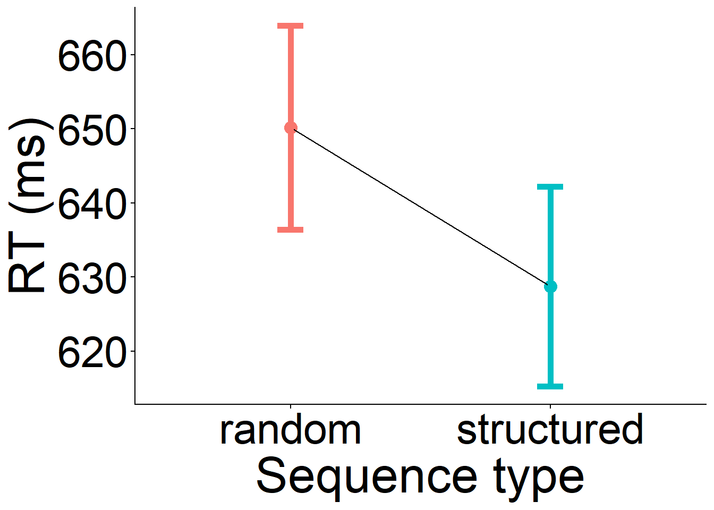
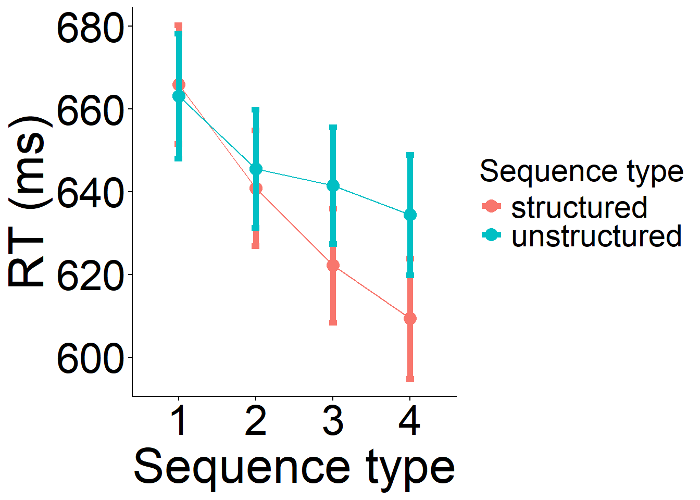

Code
# cleawn the workspace
rm(list=ls())
# load the long df with SL data
full_df<-read.csv("group_data/long_df_stat.csv")# cleawn the workspace
rm(list=ls())
# load the long df with SL data
full_df<-read.csv("group_data/long_df_stat.csv")As false alarms, we consider the cases in which participants pressed space when:
The proportion is then calculated as the number of key presses over the number of syllables diveded by 48 times 4 (number of targets)
[1] "total number of participants = 238"Warning: Removed 3 rows containing non-finite outside the scale range
(`stat_bin()`).Warning: Removed 3 rows containing non-finite outside the scale range
(`stat_density()`).
Delete participants age>35
full_df<-full_df%>%
filter(age<36)
# derive descriptives again
descriptives<-full_df %>%
dplyr::group_by(participant ) %>%
dplyr::summarise(age = first(age),
gender = first(gender),
feedback = first(feedback),
Mean_RT = mean(RTms, na.rm = TRUE),
accuracy = mean(accuracy, na.rm = T),
false_alarms_count= sum(FA, na.rm= T),
valence = mean(slider_valence_2.response, na.rm = T),
false_alarm_per = sum(FA==1, na.rm =T)/ (n()/48*4),
n_trials = (n()/48*4)
)
# histogrames of age
ggplot(descriptives, aes(x = age))+
geom_histogram(aes(y = after_stat(density)), position = "identity",
fill = "#009E73",
alpha =.4, bins = 10)+
geom_density(linewidth = 1, alpha = .30, fill = "#009E73")+
theme_classic()
Descriptives
Recode the variable “gender”. This variable has many different values. We need to record only three: Male, female, non-binary, not -reported
# unique values gender
gender_unique<-unique(descriptives$gender)
# it is participant 91
# there are some values that appear to be "FALSE". I need to find the right value
descriptives$participant[descriptives$gender=="FALSE"][1] 91# it is participant 91. I can tell that is a female
# create a new variable
descriptives$gender_new<-descriptives$gender
males<-c("Male", "male", "Men" , "man","Male", "male ", "male", "Man","Man ", "M" )
females<-c("Female" , "Woman" ,"female" , "woman" , "woman " , "women" , "female " ,
"femalwe", "vrouw ", "Vrouw", "Vrouw " , "vrouw","Female ", "Femail" ,"f" , "v", "FALSE" )
descriptives$gender_new[descriptives$gender_new %in% males ]<-"Male"
descriptives$gender_new[descriptives$gender_new %in% females ]<-"Female"
non_binary<-c("non-binary", "Bigender (biological male)","nonbinary")
descriptives$gender_new[descriptives$gender_new %in% non_binary ]<-"Non binary"
unique(descriptives$gender_new)[1] "Female" "Non binary" "Male" # now also for the full_df
full_df$gender_new<-full_df$gender
full_df$gender_new[full_df$gender_new %in% males ]<-"Male"
full_df$gender_new[full_df$gender_new %in% females ]<-"Female"
non_binary<-c("non-binary", "Bigender (biological male)","nonbinary")
full_df$gender_new[full_df$gender_new %in% non_binary ]<-"Non binary"
unique(full_df$gender_new)[1] "Female" "Non binary" "Male" full_df %>%
dplyr::group_by(participant ) %>%
dplyr::summarise(age = first(age),
gender_new = first(gender_new),
feedback=first(feedback),
Mean_RT = mean(RTms, na.rm = TRUE),
accuracy = mean(accuracy, na.rm = T),
false_alarms_count= sum(FA, na.rm= T),
false_alarm_per = sum(FA==1, na.rm =T)/ (n()/48*4),
n_trials = (n()/48*4)
) %>%
group_by(feedback)%>%
summarise(n_participants = n_distinct(participant),
mean_age = mean(age, na.rm=T),
sd_age = sd(age, na.rm=T),
n_male = sum(gender_new == "Male" , na.rm = TRUE),
n_female = sum(gender_new == "Female", na.rm = TRUE),
n_non_binary = sum(gender_new == "Non binary", na.rm = TRUE),
#feedback_cond = sum(feedback ==1, na.rm = T),
age_min = min(age, na.rm = TRUE),
age_max = max(age, na.rm = TRUE)) %>%
gt() %>%
tab_header(
title = "participants"
)| participants | |||||||
| n_participants | mean_age | sd_age | n_male | n_female | n_non_binary | age_min | age_max |
|---|---|---|---|---|---|---|---|
| 223 | 23.05381 | 2.973876 | 65 | 154 | 4 | 17 | 33 |
historgrams of accuracy and false alarms
ggplot(descriptives, aes(x = accuracy))+
geom_histogram() +
theme_classic()+
ggtitle("accuracy distribution")`stat_bin()` using `bins = 30`. Pick better value `binwidth`.
ggplot(descriptives, aes(x = false_alarm_per))+
geom_histogram() +
theme_classic()+
ggtitle("false alarms % distribution")`stat_bin()` using `bins = 30`. Pick better value `binwidth`.
Select only participants with accuracy above mean - 2.5 SD and false alarm percentage below mean + 2.5 sd
cutoff_accuracy<-mean(descriptives$accuracy, na.rm=T) - 2.5*sd(descriptives$accuracy, na.rm=T)
paste0("cutoff for accuracy is ", cutoff_accuracy)[1] "cutoff for accuracy is 0.547611568241064"excl_acc<-descriptives$participant[descriptives$accuracy<cutoff_accuracy]
# select participants
paste0 ("participants excluded for low accuracy are ",
nrow(descriptives[descriptives$accuracy< cutoff_accuracy,]))[1] "participants excluded for low accuracy are 5"# now exclusion for false alarms
cutoff_false_alarm<-mean(descriptives$false_alarm_per, na.rm=T) + 2.5*sd(descriptives$false_alarm_per, na.rm=T)
paste0("cutoff for false alarm is ", cutoff_false_alarm)[1] "cutoff for false alarm is 0.434586141680215"# select participants
paste0 ("participants excluded for high false alarms are ",
nrow(descriptives[descriptives$false_alarm_per> cutoff_false_alarm,]))[1] "participants excluded for high false alarms are 6"excl_fa<-descriptives$participant[descriptives$false_alarm_per>cutoff_false_alarm]
paste0 ("total participants excluded for low accuracy and high false alarms are ",
length(unique(c(excl_acc, excl_fa))))[1] "total participants excluded for low accuracy and high false alarms are 11"Number of remaining participants by feedback condition
full_df<-full_df[!full_df$participant%in% c(excl_acc, excl_fa),][1] "5 participants were excluded because did not complete all the trials (72 structured and 18 unstructured)"full_df[!is.na(full_df$feedback),] %>%
dplyr::group_by(participant ) %>%
dplyr::summarise(age = first(age),
gender_new = first(gender_new),
feedback=first(feedback),
Mean_RT = mean(RTms, na.rm = TRUE),
accuracy = mean(accuracy, na.rm = T),
false_alarms_count= sum(FA, na.rm= T),
false_alarm_per = sum(FA==1, na.rm =T)/ (n()/48*4),
n_trials = (n()/48*4)
) %>%
group_by(feedback)%>%
summarise(n_participants = n_distinct(participant),
mean_age = mean(age, na.rm=T),
sd_age = sd(age, na.rm=T),
n_male = sum(gender_new == "Male" , na.rm = TRUE),
n_female = sum(gender_new == "Female", na.rm = TRUE),
n_non_binary = sum(gender_new == "Non binary", na.rm = TRUE),
#feedback_cond = sum(feedback ==1, na.rm = T),
age_min = min(age, na.rm = TRUE),
age_max = max(age, na.rm = TRUE),
Mean_RT = mean(Mean_RT, na.rm = TRUE),
accuracy = mean(accuracy, na.rm = T),
false_alarms_per= first(false_alarm_per)) %>%
gt() %>%
tab_header(
title = "participants"
)| participants | ||||||||||
| n_participants | mean_age | sd_age | n_male | n_female | n_non_binary | age_min | age_max | Mean_RT | accuracy | false_alarms_per |
|---|---|---|---|---|---|---|---|---|---|---|
| 207 | 23.02415 | 2.95178 | 58 | 145 | 4 | 17 | 33 | 646.0543 | 0.8628959 | 0.0462585 |
Is the difference in accuracy and RT statistically significant?
mod_rt<-lmer(RTms~feedback + (1|participant),
data = full_df %>%
filter(!participant %in% c(excl_acc, excl_fa) & accuracy ==1))
summary(mod_rt)Linear mixed model fit by REML. t-tests use Satterthwaite's method [
lmerModLmerTest]
Formula: RTms ~ feedback + (1 | participant)
Data:
full_df %>% filter(!participant %in% c(excl_acc, excl_fa) & accuracy == 1)
REML criterion at convergence: 827199.6
Scaled residuals:
Min 1Q Median 3Q Max
-5.9604 -0.5033 -0.1071 0.4251 4.5263
Random effects:
Groups Name Variance Std.Dev.
participant (Intercept) 9164 95.73
Residual 22266 149.22
Number of obs: 64303, groups: participant, 207
Fixed effects:
Estimate Std. Error df t value Pr(>|t|)
(Intercept) 644.92 9.38 205.02 68.757 <2e-16 ***
feedback -14.40 13.36 204.98 -1.078 0.282
---
Signif. codes: 0 '***' 0.001 '**' 0.01 '*' 0.05 '.' 0.1 ' ' 1
Correlation of Fixed Effects:
(Intr)
feedback -0.702mod_rt2<-lm(Mean_RT~feedback , data = descriptives)
summary(mod_rt2)
Call:
lm(formula = Mean_RT ~ feedback, data = descriptives)
Residuals:
Min 1Q Median 3Q Max
-187.64 -82.98 -25.14 53.82 1235.37
Coefficients:
Estimate Std. Error t value Pr(>|t|)
(Intercept) 672.92 12.87 52.299 <2e-16 ***
feedback -35.52 18.32 -1.939 0.0538 .
---
Signif. codes: 0 '***' 0.001 '**' 0.01 '*' 0.05 '.' 0.1 ' ' 1
Residual standard error: 136.8 on 221 degrees of freedom
Multiple R-squared: 0.01673, Adjusted R-squared: 0.01228
F-statistic: 3.76 on 1 and 221 DF, p-value: 0.05377anova(mod_rt2)Analysis of Variance Table
Response: Mean_RT
Df Sum Sq Mean Sq F value Pr(>F)
feedback 1 70336 70336 3.7597 0.05377 .
Residuals 221 4134408 18708
---
Signif. codes: 0 '***' 0.001 '**' 0.01 '*' 0.05 '.' 0.1 ' ' 1mod_accuracy2<-lm(accuracy~feedback , data = descriptives)
summary(mod_accuracy2)
Call:
lm(formula = accuracy ~ feedback, data = descriptives)
Residuals:
Min 1Q Median 3Q Max
-0.80233 -0.03578 0.02823 0.07539 0.15878
Coefficients:
Estimate Std. Error t value Pr(>|t|)
(Intercept) 0.83288 0.01120 74.362 <2e-16 ***
feedback 0.02789 0.01595 1.749 0.0817 .
---
Signif. codes: 0 '***' 0.001 '**' 0.01 '*' 0.05 '.' 0.1 ' ' 1
Residual standard error: 0.1191 on 221 degrees of freedom
Multiple R-squared: 0.01365, Adjusted R-squared: 0.009191
F-statistic: 3.059 on 1 and 221 DF, p-value: 0.08166anova(mod_accuracy2)Analysis of Variance Table
Response: accuracy
Df Sum Sq Mean Sq F value Pr(>F)
feedback 1 0.04337 0.043367 3.0593 0.08166 .
Residuals 221 3.13278 0.014175
---
Signif. codes: 0 '***' 0.001 '**' 0.01 '*' 0.05 '.' 0.1 ' ' 1False alarms
mod_fa2<-lm(false_alarm_per~feedback , data = descriptives)
summary(mod_fa2)
Call:
lm(formula = false_alarm_per ~ feedback, data = descriptives)
Residuals:
Min 1Q Median 3Q Max
-0.13892 -0.06864 -0.02782 0.03795 0.47060
Coefficients:
Estimate Std. Error t value Pr(>|t|)
(Intercept) 0.163878 0.009946 16.477 <2e-16 ***
feedback 0.013140 0.014161 0.928 0.354
---
Signif. codes: 0 '***' 0.001 '**' 0.01 '*' 0.05 '.' 0.1 ' ' 1
Residual standard error: 0.1057 on 221 degrees of freedom
Multiple R-squared: 0.003881, Adjusted R-squared: -0.0006262
F-statistic: 0.8611 on 1 and 221 DF, p-value: 0.3544anova(mod_fa2)Analysis of Variance Table
Response: false_alarm_per
Df Sum Sq Mean Sq F value Pr(>F)
feedback 1 0.00962 0.0096247 0.8611 0.3544
Residuals 221 2.47023 0.0111775 valence
mod_val2<-lm(valence~feedback , data = descriptives)
summary(mod_val2)
Call:
lm(formula = valence ~ feedback, data = descriptives)
Residuals:
Min 1Q Median 3Q Max
-51.271 -12.174 -2.472 16.033 44.798
Coefficients:
Estimate Std. Error t value Pr(>|t|)
(Intercept) 54.6533 1.9159 28.526 <2e-16 ***
feedback -0.4766 2.7279 -0.175 0.861
---
Signif. codes: 0 '***' 0.001 '**' 0.01 '*' 0.05 '.' 0.1 ' ' 1
Residual standard error: 20.37 on 221 degrees of freedom
Multiple R-squared: 0.0001381, Adjusted R-squared: -0.004386
F-statistic: 0.03053 on 1 and 221 DF, p-value: 0.8615anova(mod_val2)Analysis of Variance Table
Response: valence
Df Sum Sq Mean Sq F value Pr(>F)
feedback 1 13 12.66 0.0305 0.8615
Residuals 221 91670 414.79 # valence and arousal
full_df_val<-full_df[!is.na(full_df$slider_valence_2.response),]
# select only accuracy =1
full_df<-full_df[full_df$accuracy==1,]
# get trial number
full_df$trial_num<-full_df$trialN.1
# check how many trials pwer participant per condition
trial_val<-full_df_val%>%
group_by(participant, sequence_type) %>%
tally()
unique(trial_val$n)[1] 72 18# we only have 72 and 18
# how many participants left?
paste0("we have ", length(unique(full_df$participant[
!is.na(full_df$participant)
])), " participants left")[1] "we have 207 participants left"descriptives<-descriptives[!descriptives$participant%in% c(excl_acc, excl_fa),]
descriptives<-descriptives[!descriptives$participant %in% part_incompl, ]
mod_age2<-lm(age~feedback, data = descriptives)
summary(mod_age2)
Call:
lm(formula = age ~ feedback, data = descriptives)
Residuals:
Min 1Q Median 3Q Max
-5.843 -2.200 -0.200 1.478 10.157
Coefficients:
Estimate Std. Error t value Pr(>|t|)
(Intercept) 23.2000 0.2882 80.490 <2e-16 ***
feedback -0.3569 0.4106 -0.869 0.386
---
Signif. codes: 0 '***' 0.001 '**' 0.01 '*' 0.05 '.' 0.1 ' ' 1
Residual standard error: 2.954 on 205 degrees of freedom
Multiple R-squared: 0.003671, Adjusted R-squared: -0.001189
F-statistic: 0.7553 on 1 and 205 DF, p-value: 0.3858anova(mod_age2)Analysis of Variance Table
Response: age
Df Sum Sq Mean Sq F value Pr(>F)
feedback 1 6.59 6.5890 0.7553 0.3858
Residuals 205 1788.29 8.7234 Create valence datasets
# calculate mean and standard deviation
valence_summary_val<- summarySEwithin(full_df_val,
measurevar = c("slider_valence_2.response"),
withinvars = c("target_pos",
"sequence_type" ),
betweenvars = c("feedback", "participant"),
idvar = "participant",
na.rm = T)Automatically converting the following non-factors to factors: feedback, participant, target_pos, sequence_type# val diff is the difference between the measure and the baseline
valence_summary_val_diff<- summarySEwithin(full_df_val,
measurevar = c("val_diff"),
withinvars = c("target_pos",
"sequence_type" ),
betweenvars = c("feedback", "participant"),
idvar = "participant",
na.rm = T)Automatically converting the following non-factors to factors: feedback, participant, target_pos, sequence_type# load the data
load("mainSLmodels.Rdata")
# stat_learn_mod_compl_syll_nointer_wcov<-lmer(RTms ~ 1+target_pos*target_rep*feedback2+syllable_order_n_z+
# (1+target_pos+target_rep+syllable_order_n_z|participant ) ,
# data = full_df[
# full_df$sequence_type=="structured" ,],
# control = lmerControl(optimizer = "bobyqa", optCtrl = list(maxfun = 1000000000)),
# REML=T)
Anova(stat_learn_mod_compl_syll_nointer_wcov, type =2)Analysis of Deviance Table (Type II Wald chisquare tests)
Response: RTms
Chisq Df Pr(>Chisq)
target_pos 16.3047 2 0.0002881 ***
target_rep 166.7508 3 < 2.2e-16 ***
feedback2 0.8593 1 0.3539466
syllable_order_n_z 195.8371 1 < 2.2e-16 ***
target_pos:target_rep 75.8564 6 2.557e-14 ***
target_pos:feedback2 1.1974 2 0.5495147
target_rep:feedback2 2.4236 3 0.4892545
target_pos:target_rep:feedback2 3.3504 6 0.7637530
---
Signif. codes: 0 '***' 0.001 '**' 0.01 '*' 0.05 '.' 0.1 ' ' 1summary(stat_learn_mod_compl_syll_nointer_wcov)Linear mixed model fit by REML. t-tests use Satterthwaite's method [
lmerModLmerTest]
Formula: RTms ~ 1 + target_pos * target_rep * feedback2 + syllable_order_n_z +
(1 + target_pos + target_rep + syllable_order_n_z | participant)
Data: full_df[full_df$sequence_type == "structured", ]
Control: lmerControl(optimizer = "bobyqa", optCtrl = list(maxfun = 1e+09))
REML criterion at convergence: 660863.3
Scaled residuals:
Min 1Q Median 3Q Max
-5.8066 -0.5031 -0.1087 0.4263 4.5070
Random effects:
Groups Name Variance Std.Dev. Corr
participant (Intercept) 9167.10 95.745
target_pos2 95.18 9.756 0.39
target_pos3 32.53 5.703 0.52 -0.58
target_rep2 392.50 19.812 -0.14 -0.41 0.26
target_rep3 735.37 27.118 -0.24 -0.41 0.17 0.95
target_rep4 1744.58 41.768 -0.27 -0.46 0.19 0.88 0.98
syllable_order_n_z 308.07 17.552 0.22 0.60 -0.36 -0.52 -0.72
Residual 22239.33 149.129
-0.83
Number of obs: 51351, groups: participant, 207
Fixed effects:
Estimate Std. Error df t value
(Intercept) 672.3302 7.3569 232.8081 91.388
target_pos2 -9.4348 3.2875 2442.0701 -2.870
target_pos3 5.6754 3.2700 6622.4307 1.736
target_rep2 -29.2046 3.7559 935.8939 -7.776
target_rep3 -46.5762 4.7532 591.0006 -9.799
target_rep4 -59.7199 6.1783 368.8197 -9.666
feedback21 -6.8066 6.8808 229.0926 -0.989
syllable_order_n_z 29.0085 2.0729 206.0802 13.994
target_pos2:target_rep2 19.4242 4.5335 50641.4127 4.285
target_pos3:target_rep2 -18.3788 4.5647 50691.7489 -4.026
target_pos2:target_rep3 4.2757 4.5570 50708.8936 0.938
target_pos3:target_rep3 -12.5724 4.5884 50741.2951 -2.740
target_pos2:target_rep4 4.9663 4.5916 50763.4457 1.082
target_pos3:target_rep4 -18.3854 4.6193 50747.4477 -3.980
target_pos2:feedback21 -0.9379 3.2873 2368.4574 -0.285
target_pos3:feedback21 -1.0243 3.2674 7637.8972 -0.314
target_rep2:feedback21 -1.2698 3.4419 1357.0408 -0.369
target_rep3:feedback21 -0.6848 3.5420 1186.3605 -0.193
target_rep4:feedback21 3.9748 3.6936 892.5897 1.076
target_pos2:target_rep2:feedback21 4.4619 4.5308 50717.6567 0.985
target_pos3:target_rep2:feedback21 1.8900 4.5647 50691.6311 0.414
target_pos2:target_rep3:feedback21 2.4438 4.5454 50200.1432 0.538
target_pos3:target_rep3:feedback21 -1.9732 4.5880 50754.9136 -0.430
target_pos2:target_rep4:feedback21 -2.4123 4.5712 50059.6076 -0.528
target_pos3:target_rep4:feedback21 -2.2548 4.6135 50847.9915 -0.489
Pr(>|t|)
(Intercept) < 2e-16 ***
target_pos2 0.00414 **
target_pos3 0.08269 .
target_rep2 1.97e-14 ***
target_rep3 < 2e-16 ***
target_rep4 < 2e-16 ***
feedback21 0.32360
syllable_order_n_z < 2e-16 ***
target_pos2:target_rep2 1.83e-05 ***
target_pos3:target_rep2 5.67e-05 ***
target_pos2:target_rep3 0.34812
target_pos3:target_rep3 0.00615 **
target_pos2:target_rep4 0.27944
target_pos3:target_rep4 6.90e-05 ***
target_pos2:feedback21 0.77543
target_pos3:feedback21 0.75391
target_rep2:feedback21 0.71223
target_rep3:feedback21 0.84672
target_rep4:feedback21 0.28216
target_pos2:target_rep2:feedback21 0.32473
target_pos3:target_rep2:feedback21 0.67884
target_pos2:target_rep3:feedback21 0.59083
target_pos3:target_rep3:feedback21 0.66714
target_pos2:target_rep4:feedback21 0.59769
target_pos3:target_rep4:feedback21 0.62503
---
Signif. codes: 0 '***' 0.001 '**' 0.01 '*' 0.05 '.' 0.1 ' ' 1
Correlation matrix not shown by default, as p = 25 > 12.
Use print(x, correlation=TRUE) or
vcov(x) if you need itoptimizer (bobyqa) convergence code: 0 (OK)
boundary (singular) fit: see help('isSingular')emm_sl<-emmeans(stat_learn_mod_compl_syll_nointer_wcov, ~ target_pos | target_rep)Note: D.f. calculations have been disabled because the number of observations exceeds 3000.
To enable adjustments, add the argument 'pbkrtest.limit = 51351' (or larger)
[or, globally, 'set emm_options(pbkrtest.limit = 51351)' or larger];
but be warned that this may result in large computation time and memory use.Note: D.f. calculations have been disabled because the number of observations exceeds 3000.
To enable adjustments, add the argument 'lmerTest.limit = 51351' (or larger)
[or, globally, 'set emm_options(lmerTest.limit = 51351)' or larger];
but be warned that this may result in large computation time and memory use.NOTE: Results may be misleading due to involvement in interactionspairs(emm_sl, adjust = "bonferroni")target_rep = 1:
contrast estimate SE df z.ratio p.value
target_pos1 - target_pos2 9.43 3.29 Inf 2.870 0.0123
target_pos1 - target_pos3 -5.68 3.27 Inf -1.736 0.2479
target_pos2 - target_pos3 -15.11 3.37 Inf -4.480 <0.0001
target_rep = 2:
contrast estimate SE df z.ratio p.value
target_pos1 - target_pos2 -9.99 3.28 Inf -3.042 0.0071
target_pos1 - target_pos3 12.70 3.24 Inf 3.926 0.0003
target_pos2 - target_pos3 22.69 3.34 Inf 6.795 <0.0001
target_rep = 3:
contrast estimate SE df z.ratio p.value
target_pos1 - target_pos2 5.16 3.29 Inf 1.569 0.3501
target_pos1 - target_pos3 6.90 3.27 Inf 2.111 0.1043
target_pos2 - target_pos3 1.74 3.37 Inf 0.516 1.0000
target_rep = 4:
contrast estimate SE df z.ratio p.value
target_pos1 - target_pos2 4.47 3.32 Inf 1.344 0.5369
target_pos1 - target_pos3 12.71 3.31 Inf 3.844 0.0004
target_pos2 - target_pos3 8.24 3.38 Inf 2.436 0.0446
Results are averaged over the levels of: feedback2
Degrees-of-freedom method: asymptotic
P value adjustment: bonferroni method for 3 tests contrast(
emm_sl,
method = list(linear = c(-1, 0, 1)),
adjust = "bonferroni"
)target_rep = 1:
contrast estimate SE df z.ratio p.value
linear 5.68 3.27 Inf 1.736 0.0826
target_rep = 2:
contrast estimate SE df z.ratio p.value
linear -12.70 3.24 Inf -3.926 <0.0001
target_rep = 3:
contrast estimate SE df z.ratio p.value
linear -6.90 3.27 Inf -2.111 0.0348
target_rep = 4:
contrast estimate SE df z.ratio p.value
linear -12.71 3.31 Inf -3.844 0.0001
Results are averaged over the levels of: feedback2
Degrees-of-freedom method: asymptotic emm_sl_df<-as.data.frame(emm_sl)
sl_plot<-ggplot(emm_sl_df, aes(x = target_pos, y = emmean, color = target_pos, group = 1)) +
geom_point(size = 4) +
geom_line(size = 0.5, color = "black") +
geom_errorbar(aes(ymin = emmean-SE, ymax = emmean+SE), width = 0.1, size=2) +
labs(
x = "Triplet position",
y = "RT (ms)",
color = "Triplet position"
)+
ggtitle("Word presentation")+
theme_classic()+
facet_grid(.~target_rep)+
theme(legend.position = "none")+
theme(
plot.title = element_text(size = 35, hjust = 0.5, face = "plain"),
axis.title.x = element_text(size = 35),
axis.title.y = element_text(size = 35),
axis.text=element_text(size=30),
legend.text=element_text(size=rel(2)),
legend.title = element_text(size=rel(2)),
strip.text.x = element_text(size=30)
)Warning: Using `size` aesthetic for lines was deprecated in ggplot2 3.4.0.
ℹ Please use `linewidth` instead.sl_plot
# determine the random structure of the the model
# source("R/4.structured_vs_unstructured_random_effects_model_selection.R")
# stat_learn_mod_comp_str_full_rand_wpred_wcov<-lmer(RTms ~ 1+sequence_type_f*feedback2+syllable_order_n_z+trial_num_z+
# (1+sequence_type_f+syllable_order_n_z+trial_num_z|participant ) ,
# data = full_df[is.na(full_df$target_pos) |full_df$target_pos==3, ],
# control = lmerControl(optimizer = "bobyqa", optCtrl = list(maxfun = 2e5)),
# REML=F)
summary(stat_learn_mod_comp_str_full_rand_wpred_wcov)Linear mixed model fit by maximum likelihood . t-tests use Satterthwaite's
method [lmerModLmerTest]
Formula: RTms ~ 1 + sequence_type_f * feedback2 + syllable_order_n_z +
trial_num_z + (1 + sequence_type_f + syllable_order_n_z +
trial_num_z | participant)
Data: full_df[is.na(full_df$target_pos) | full_df$target_pos == 3, ]
Control: lmerControl(optimizer = "bobyqa", optCtrl = list(maxfun = 2e+05))
AIC BIC logLik -2*log(L) df.resid
382644.2 382785.4 -191305.1 382610.2 29848
Scaled residuals:
Min 1Q Median 3Q Max
-6.7051 -0.5076 -0.1111 0.4154 4.7064
Random effects:
Groups Name Variance Std.Dev. Corr
participant (Intercept) 9439.95 97.16
sequence_type_f1 345.94 18.60 -0.11
syllable_order_n_z 68.73 8.29 -0.12 0.15
trial_num_z 782.45 27.97 0.17 -0.98 -0.05
Residual 20588.21 143.49
Number of obs: 29865, groups: participant, 207
Fixed effects:
Estimate Std. Error df t value Pr(>|t|)
(Intercept) 641.16073 6.81940 206.83592 94.020 < 2e-16 ***
sequence_type_f1 -10.71715 1.71813 200.88671 -6.238 2.58e-09 ***
feedback21 -8.43632 6.69901 207.04773 -1.259 0.20933
syllable_order_n_z 7.83083 1.01429 193.66011 7.721 6.04e-13 ***
trial_num_z 6.11636 2.28753 200.72298 2.674 0.00812 **
sequence_type_f1:feedback21 -0.06445 0.87027 194.71485 -0.074 0.94104
---
Signif. codes: 0 '***' 0.001 '**' 0.01 '*' 0.05 '.' 0.1 ' ' 1
Correlation of Fixed Effects:
(Intr) sqn__1 fdbc21 syl___ trl_n_
sqnc_typ_f1 -0.117
feedback21 0.014 0.001
syllbl_rd__ -0.069 0.071 -0.001
trial_num_z 0.176 -0.861 0.000 -0.029
sqnc_t_1:21 0.001 0.004 0.075 0.000 -0.002Anova(stat_learn_mod_comp_str_full_rand_wpred_wcov, type =2)Analysis of Deviance Table (Type II Wald chisquare tests)
Response: RTms
Chisq Df Pr(>Chisq)
sequence_type_f 38.9058 1 4.448e-10 ***
feedback2 1.5809 1 0.2086
syllable_order_n_z 59.6062 1 1.159e-14 ***
trial_num_z 7.1491 1 0.0075 **
sequence_type_f:feedback2 0.0055 1 0.9410
---
Signif. codes: 0 '***' 0.001 '**' 0.01 '*' 0.05 '.' 0.1 ' ' 1# with sequence type now for plotting
# stat_learn_mod_comp_str_full_rand_wpred_wcov2<-lmer(RTms ~ 1+sequence_type*feedback2+syllable_order_n_z+trial_num_z+
# (1+sequence_type+syllable_order_n_z+trial_num_z|participant ) ,
# data = full_df[is.na(full_df$target_pos) |full_df$target_pos==3, ],
# control = lmerControl(optimizer = "bobyqa", optCtrl = list(maxfun = 2e5)),
# REML=F)
# create the estimated marginal means for the contrast
emm_struct<-emmeans(stat_learn_mod_comp_str_full_rand_wpred_wcov2, ~ sequence_type )Note: D.f. calculations have been disabled because the number of observations exceeds 3000.
To enable adjustments, add the argument 'pbkrtest.limit = 29865' (or larger)
[or, globally, 'set emm_options(pbkrtest.limit = 29865)' or larger];
but be warned that this may result in large computation time and memory use.Note: D.f. calculations have been disabled because the number of observations exceeds 3000.
To enable adjustments, add the argument 'lmerTest.limit = 29865' (or larger)
[or, globally, 'set emm_options(lmerTest.limit = 29865)' or larger];
but be warned that this may result in large computation time and memory use.NOTE: Results may be misleading due to involvement in interactionspairs(emm_struct) contrast estimate SE df z.ratio p.value
structured - unstructured -21.4 3.44 Inf -6.238 <0.0001
Results are averaged over the levels of: feedback2
Degrees-of-freedom method: asymptotic emm_struct_df<-as.data.frame(emm_struct)
# rename sequence type from unstructured to random
emm_struct_df$sequence_type2<-ifelse(emm_struct_df$sequence_type=="unstructured",
"random", "structured")
struct_plot<-ggplot(emm_struct_df, aes(x = sequence_type2, y = emmean, color = sequence_type2, group = 1)) +
geom_point(size = 4) +
geom_line(size = 0.5, color = "black") +
geom_errorbar(aes(ymin = asymp.LCL, ymax = asymp.UCL), width = 0.1, size=2) +
labs(
x = "Sequence type",
y = "RT (ms)",
color = "Sequence type"
)+
#ggtitle("Target repetition")+
theme_classic()+
scale_color_discrete(labels = c("Random", "Structured")) +
theme(legend.position = "none")+
theme(
#plot.title = element_text(size = 35, hjust = 0.5, face = "plain"),
axis.title.x = element_text(size = 35),
axis.title.y = element_text(size = 35),
axis.text=element_text(size=30),
legend.text=element_text(size=rel(2)),
legend.title = element_text(size=rel(2)),
strip.text.x = element_text(size=30)
)
struct_plot
slplots_comb<-ggpubr::ggarrange(sl_plot, struct_plot, ncol = 2, labels = c("a)", "b)" ),
font.label = list(size = 38, face = "bold"),
label.x = 0.02 , label.y = 0.98) # position of tags in each panel (0–1))
ggsave(filename = "figures/SL_plots_combined.png",
plot = slplots_comb, width= 22, height=10, dpi = 300)# facil_effect<-lmer(RTms ~ 1+target_rep*sequence_type+syllable_order_n_z+trial_new+
# (1+target_rep*sequence_type++syllable_order_n_z+trial_new|participant ) ,
# data = full_df[is.na(full_df$target_pos) |full_df$target_pos!=1,],
# control = lmerControl(optimizer = "bobyqa", optCtrl = list(maxfun = 1000000000)),
# REML=T)
summary(facil_effect)Linear mixed model fit by REML. t-tests use Satterthwaite's method [
lmerModLmerTest]
Formula: RTms ~ 1 + target_rep * sequence_type + syllable_order_n_z +
trial_new + (1 + target_rep * sequence_type + +syllable_order_n_z +
trial_new | participant)
Data: full_df[is.na(full_df$target_pos) | full_df$target_pos != 1, ]
Control: lmerControl(optimizer = "bobyqa", optCtrl = list(maxfun = 1e+09))
REML criterion at convergence: 607668.5
Scaled residuals:
Min 1Q Median 3Q Max
-6.5125 -0.5080 -0.1148 0.4170 4.6206
Random effects:
Groups Name Variance Std.Dev. Corr
participant (Intercept) 1.055e+04 102.7362
target_rep2 6.085e+02 24.6671 -0.08
target_rep3 1.445e+03 38.0178 -0.22
target_rep4 2.883e+03 53.6916 -0.22
sequence_typeunstructured 9.580e+01 9.7877 0.09
syllable_order_n_z 3.945e+02 19.8611 0.22
trial_new 6.854e-01 0.8279 -0.29
target_rep2:sequence_typeunstructured 2.654e+02 16.2917 -0.21
target_rep3:sequence_typeunstructured 1.173e+02 10.8305 -0.04
target_rep4:sequence_typeunstructured 1.260e+02 11.2237 -0.22
Residual 2.126e+04 145.8200
0.90
0.87 0.98
0.41 -0.02 0.01
-0.60 -0.80 -0.89 0.14
0.02 0.02 -0.04 -0.02 0.02
-0.75 -0.53 -0.42 -0.44 -0.02 0.17
-0.83 -0.67 -0.56 -0.37 0.12 0.01 0.97
-0.90 -0.69 -0.72 -0.60 0.55 0.00 0.64 0.67
Number of obs: 47342, groups: participant, 207
Fixed effects:
Estimate Std. Error df t value
(Intercept) 648.10214 7.65682 205.69193 84.644
target_rep2 -25.03038 3.08419 214.83471 -8.116
target_rep3 -43.70793 4.43988 213.80229 -9.844
target_rep4 -56.54528 5.97970 203.84009 -9.456
sequence_typeunstructured -2.73451 3.07426 741.31562 -0.889
syllable_order_n_z 25.15936 2.21721 201.32330 11.347
trial_new 0.39648 0.06345 203.22099 6.249
target_rep2:sequence_typeunstructured 7.45496 4.36975 934.28146 1.706
target_rep3:sequence_typeunstructured 22.05569 4.32424 1826.73465 5.100
target_rep4:sequence_typeunstructured 27.79256 4.34880 1328.62280 6.391
Pr(>|t|)
(Intercept) < 2e-16 ***
target_rep2 3.70e-14 ***
target_rep3 < 2e-16 ***
target_rep4 < 2e-16 ***
sequence_typeunstructured 0.3740
syllable_order_n_z < 2e-16 ***
trial_new 2.39e-09 ***
target_rep2:sequence_typeunstructured 0.0883 .
target_rep3:sequence_typeunstructured 3.74e-07 ***
target_rep4:sequence_typeunstructured 2.28e-10 ***
---
Signif. codes: 0 '***' 0.001 '**' 0.01 '*' 0.05 '.' 0.1 ' ' 1
Correlation of Fixed Effects:
(Intr) trgt_2 trgt_3 trgt_4 sqnc_t syl___ trl_nw tr_2:_ tr_3:_
target_rep2 -0.251
target_rep3 -0.352 0.739
target_rep4 -0.354 0.723 0.889
sqnc_typnst -0.078 0.297 0.158 0.113
syllbl_rd__ 0.323 -0.533 -0.786 -0.881 0.046
trial_new -0.302 -0.001 -0.007 -0.043 -0.004 0.038
trgt_rp2:s_ 0.017 -0.460 -0.190 -0.142 -0.694 -0.028 0.038
trgt_rp3:s_ 0.067 -0.264 -0.324 -0.152 -0.689 0.007 0.001 0.519
trgt_rp4:s_ 0.025 -0.255 -0.173 -0.240 -0.697 0.024 -0.001 0.503 0.499
optimizer (bobyqa) convergence code: 0 (OK)
boundary (singular) fit: see help('isSingular')Anova(facil_effect, type = 2)Analysis of Deviance Table (Type II Wald chisquare tests)
Response: RTms
Chisq Df Pr(>Chisq)
target_rep 79.447 3 < 2.2e-16 ***
sequence_type 47.999 1 4.264e-12 ***
syllable_order_n_z 128.762 1 < 2.2e-16 ***
trial_new 39.045 1 4.141e-10 ***
target_rep:sequence_type 53.100 3 1.745e-11 ***
---
Signif. codes: 0 '***' 0.001 '**' 0.01 '*' 0.05 '.' 0.1 ' ' 1# only in the unstructured
# unstructured_streams_fact_effect<-lmer(RTms ~ 1+target_rep+syllable_order_n_z+
# (1+target_rep+syllable_order_n_z|participant ) ,
# data = full_df[
# full_df$sequence_type=="unstructured" ,],
# control = lmerControl(optimizer = "bobyqa", optCtrl = list(maxfun = 1000000000)),
# REML=T)
summary(unstructured_streams_fact_effect)Linear mixed model fit by REML. t-tests use Satterthwaite's method [
lmerModLmerTest]
Formula: RTms ~ 1 + target_rep + syllable_order_n_z + (1 + target_rep +
syllable_order_n_z | participant)
Data: full_df[full_df$sequence_type == "unstructured", ]
Control: lmerControl(optimizer = "bobyqa", optCtrl = list(maxfun = 1e+09))
REML criterion at convergence: 166058.3
Scaled residuals:
Min 1Q Median 3Q Max
-5.5610 -0.4958 -0.0879 0.4358 4.4231
Random effects:
Groups Name Variance Std.Dev. Corr
participant (Intercept) 11005.1 104.91
target_rep2 472.3 21.73 -0.40
target_rep3 2743.4 52.38 -0.41 1.00
target_rep4 6885.4 82.98 -0.44 1.00 1.00
syllable_order_n_z 1134.5 33.68 0.38 -0.99 -0.97 -0.98
Residual 20393.4 142.81
Number of obs: 12952, groups: participant, 207
Fixed effects:
Estimate Std. Error df t value Pr(>|t|)
(Intercept) 654.153 8.716 212.900 75.048 < 2e-16 ***
target_rep2 -11.542 4.696 512.498 -2.458 0.0143 *
target_rep3 -9.961 7.414 238.621 -1.344 0.1803
target_rep4 -11.466 10.686 209.661 -1.073 0.2845
syllable_order_n_z 17.905 4.064 202.943 4.406 1.7e-05 ***
---
Signif. codes: 0 '***' 0.001 '**' 0.01 '*' 0.05 '.' 0.1 ' ' 1
Correlation of Fixed Effects:
(Intr) trgt_2 trgt_3 trgt_4
target_rep2 -0.530
target_rep3 -0.602 0.758
target_rep4 -0.626 0.745 0.905
syllbl_rd__ 0.566 -0.656 -0.869 -0.935
optimizer (bobyqa) convergence code: 0 (OK)
boundary (singular) fit: see help('isSingular')Anova(unstructured_streams_fact_effect, type =2)Analysis of Deviance Table (Type II Wald chisquare tests)
Response: RTms
Chisq Df Pr(>Chisq)
target_rep 7.3595 3 0.06128 .
syllable_order_n_z 19.4138 1 1.052e-05 ***
---
Signif. codes: 0 '***' 0.001 '**' 0.01 '*' 0.05 '.' 0.1 ' ' 1# test for linearity
fac_unstruct <- emmeans(facil_effect, ~ target_rep|sequence_type)Note: D.f. calculations have been disabled because the number of observations exceeds 3000.
To enable adjustments, add the argument 'pbkrtest.limit = 47342' (or larger)
[or, globally, 'set emm_options(pbkrtest.limit = 47342)' or larger];
but be warned that this may result in large computation time and memory use.Note: D.f. calculations have been disabled because the number of observations exceeds 3000.
To enable adjustments, add the argument 'lmerTest.limit = 47342' (or larger)
[or, globally, 'set emm_options(lmerTest.limit = 47342)' or larger];
but be warned that this may result in large computation time and memory use.pairs(fac_unstruct, adjust = "bonferroni")sequence_type = structured:
contrast estimate SE df z.ratio p.value
target_rep1 - target_rep2 25.03 3.08 Inf 8.116 <0.0001
target_rep1 - target_rep3 43.71 4.44 Inf 9.844 <0.0001
target_rep1 - target_rep4 56.55 5.98 Inf 9.456 <0.0001
target_rep2 - target_rep3 18.68 3.00 Inf 6.232 <0.0001
target_rep2 - target_rep4 31.51 4.31 Inf 7.308 <0.0001
target_rep3 - target_rep4 12.84 2.88 Inf 4.463 <0.0001
sequence_type = unstructured:
contrast estimate SE df z.ratio p.value
target_rep1 - target_rep2 17.58 4.03 Inf 4.366 <0.0001
target_rep1 - target_rep3 21.65 5.10 Inf 4.247 0.0001
target_rep1 - target_rep4 28.75 6.49 Inf 4.427 <0.0001
target_rep2 - target_rep3 4.08 4.09 Inf 0.996 1.0000
target_rep2 - target_rep4 11.18 5.18 Inf 2.158 0.1855
target_rep3 - target_rep4 7.10 4.09 Inf 1.734 0.4971
Degrees-of-freedom method: asymptotic
P value adjustment: bonferroni method for 6 tests contrast(
fac_unstruct,
method = list(linear = c(-0.5,-0.25 , 0.25, 0.5)),
adjust = "fdr"
)sequence_type = structured:
contrast estimate SE df z.ratio p.value
linear -32.9 3.47 Inf -9.483 <0.0001
sequence_type = unstructured:
contrast estimate SE df z.ratio p.value
linear -15.4 3.75 Inf -4.104 <0.0001
Degrees-of-freedom method: asymptotic # plot
emm_facildf<-as.data.frame(fac_unstruct)
facil_plot<-ggplot(emm_facildf, aes(x = target_rep, y = emmean, color = sequence_type, group = sequence_type)) +
geom_point(size = 4) +
geom_line(size = 0.5) +
geom_errorbar(aes(ymin = asymp.LCL, ymax = asymp.UCL), width = 0.1, size=2) +
labs(
x = "Sequence type",
y = "RT (ms)",
color = "Sequence type"
)+
#ggtitle("Target repetition")+
theme_classic()+
#theme(legend.position = "none")+
theme(
#plot.title = element_text(size = 35, hjust = 0.5, face = "plain"),
axis.title.x = element_text(size = 35),
axis.title.y = element_text(size = 35),
axis.text=element_text(size=30),
legend.text=element_text(size=rel(2)),
legend.title = element_text(size=rel(2)),
strip.text.x = element_text(size=30)
)
facil_plot